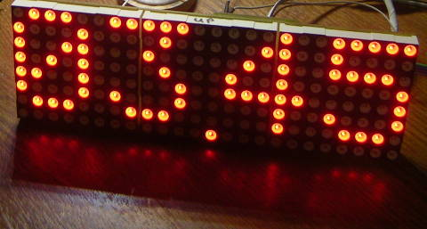

Описан индикатор на трёх светодиодных матрицах 8x8. В качестве драйвера светодиодных матриц использованы микросхемы MAX7219.
Прочитал я как-то на радиокоте статью Простые часы на светодиодных матрицах. Статья понравилась, часы у автора получились очень симпатичные. Появилась мысль сделать что-нибудь подобное.
Но мне не хотелось повторять конструкцию один-в-один. Наверняка часть функций мне не понадобится, или я захочу что-то добавить. Например, сделать часы+радиоприёмник. Или часы+веб-радио. Или просто часы :-)
Поэтому, чтобы не ограничивать полёт своей фантазии, я решил сделать для начала отдельный модуль матричного светодиодного индикатора 8x24. А потом уже думать, к чему бы его подключить.
В качестве драйверов светодиодных матриц выбрал микросхему MAX7219. Мне нравится эта микросхема - может контролировать 8 семисегментников с общим катодом или матрицу светодиодов 8x8, управляется по трём проводам (что-то вроде SPI), может регулировать яркость. Максимальный ток через светодиоды задаётся одним резистором. Применение такого драйвера освобождает контроллер от необходимости постоянно обновлять изображение на светодиодной матрице. Это облегчает программирование и позволяет уделить больше внимания другим полезным функциям устройства.
Матричные индикаторы 8x8 (красные, 5мм) заказал на ebay . Там же заказал и MAX7219 (примерно 200 рублей за 10 шт.).
Схема состоит из трёх одинаковых блоков. Каждый блок содержит матричный индикатор 8x8 и драйвер MAX7219. Вот схема блока:
Разряды я подключил не по порядку, чтобы облегчить разводку платы. Это позволило развести плату в одном слое, буквально с парой перемычек. Придётся потом при написании программы это учесть, и соответственно перемешивать битики при отправке данных. Ну да ничего, это всё равно проще, чем делать двухслойную плату:)
Блоки соединены в цепочку вот таким образом:
Платы я делаю по лазерно-утюжной технологии, поэтому стараюсь разводить их попроще. Вот что у меня получилось:
Красные - это будут проводники на плате, зелёные - перемычки проводочками с другой стороны.
Вот что получилось в итоге:
Прикладываю полный архив проекта в KiCAD.
Также на всякий случай прикладываю печатную плату в pdf, зеркальную, для изготовления по лазерно-утюжной технологии.
Статья опубликована 1 мая 2014г.
{kind=link}
{kind=link}
{kind=link}
{kind=link}